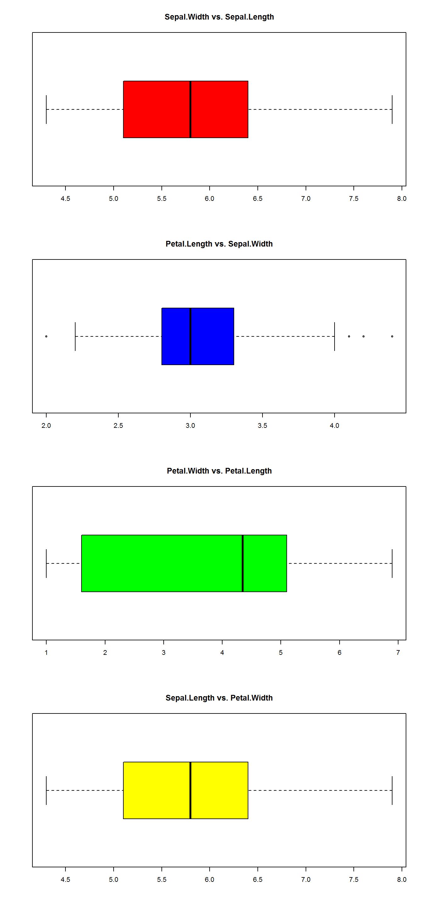

LDA project
Linear Discriminant Analysis (LDA)
This is a method of supervised multivariant classification and it is one of the most powerful tool a data analyst have. With this method we can look for the significance of the variables and we can make predictions. To make this model we need an explanatory matrix X and a response matrix Y. We will use the iris database as example.
Iris
| Sepal.Length | Sepal.Width | Petal.Length | Petal.Width | Species |
|---|---|---|---|---|
| 5.1 | 3.5 | 1.4 | 0.2 | setosa |
| 4.9 | 3.0 | 1.4 | 0.2 | setosa |
| 4.7 | 3.2 | 1.3 | 0.2 | setosa |
| 4.6 | 3.1 | 1.5 | 0.2 | setosa |
| 5.0 | 3.6 | 1.4 | 0.2 | setosa |
1- Standarization and exploration
iris.hle <- decostand(as.matrix(iris[1:4]), "hellinger")
gr <- cutree(hclust(vegdist(iris.hle, "euc"), "ward.D"), 3)
table(gr)## gr
## 1 2 3
## 50 48 52We used k = 3 groups, as the theory suggests. The model classified the data in 3 gropus of similar size.
2- Assumptions check
The LDA model is a parametric model, so there are assumptions to check and control.
2.1. NA values
any(is.na(iris))## [1] FALSEThere are not any NA value.
2.2. Multivariant homogeneity
iris.pars <- as.matrix(iris[, 1:4])
iris.pars.d <- dist(iris.pars)
(iris.MHV <- betadisper(iris.pars.d, gr))##
## Homogeneity of multivariate dispersions
##
## Call: betadisper(d = iris.pars.d, group = gr)
##
## No. of Positive Eigenvalues: 4
## No. of Negative Eigenvalues: 0
##
## Average distance to median:
## 1 2 3
## 0.4814 0.6990 0.8190
##
## Eigenvalues for PCoA axes:
## PCoA1 PCoA2 PCoA3 PCoA4 <NA> <NA> <NA> <NA>
## 630.0080 36.1579 11.6532 3.5514 NA NA NA NAanova(iris.MHV)## Analysis of Variance Table
##
## Response: Distances
## Df Sum Sq Mean Sq F value Pr(>F)
## Groups 2 2.9735 1.4867 10.884 3.909e-05 ***
## Residuals 147 20.0803 0.1366
## ---
## Signif. codes: 0 '***' 0.001 '**' 0.01 '*' 0.05 '.' 0.1 ' ' 1permutest(iris.MHV)##
## Permutation test for homogeneity of multivariate dispersions
## Permutation: free
## Number of permutations: 999
##
## Response: Distances
## Df Sum Sq Mean Sq F N.Perm Pr(>F)
## Groups 2 2.9735 1.4867 10.884 999 0.001 ***
## Residuals 147 20.0803 0.1366
## ---
## Signif. codes: 0 '***' 0.001 '**' 0.01 '*' 0.05 '.' 0.1 ' ' 1We can not accept the homogeneity assumption. We try to transform the data eliminating outlier values.

skewness(iris[1:4])## Sepal.Length Sepal.Width Petal.Length Petal.Width
## 0.3086407 0.3126147 -0.2694109 -0.1009166outliers::outlier(iris[2])## Sepal.Width
## 4.4which(iris[2] >= 4.1 | iris[2] < 2.2) ## [1] 16 33 34 61iris[c(16, 33, 34, 61), 2] <- mean(iris[,2])
iris2 <- cbind(log(iris[1]), iris[2], iris[3], iris[4])
skewness(iris2[1:4])## Sepal.Length Sepal.Width Petal.Length Petal.Width
## 0.04272597 0.12722662 -0.26941093 -0.10091657The two first variables are skewed to the right and the third one is skewed to the left.
iris.pars2 <- as.matrix(iris2)
iris.pars.d2 <- dist(iris.pars2)
(iris.MHV2 <- betadisper(iris.pars.d2, gr))##
## Homogeneity of multivariate dispersions
##
## Call: betadisper(d = iris.pars.d2, group = gr)
##
## No. of Positive Eigenvalues: 4
## No. of Negative Eigenvalues: 0
##
## Average distance to median:
## 1 2 3
## 0.3401 0.5081 0.6266
##
## Eigenvalues for PCoA axes:
## PCoA1 PCoA2 PCoA3 PCoA4 <NA> <NA> <NA> <NA>
## 551.4433 19.7877 5.1255 0.4618 NA NA NA NAanova(iris.MHV2)## Analysis of Variance Table
##
## Response: Distances
## Df Sum Sq Mean Sq F value Pr(>F)
## Groups 2 2.1079 1.05394 14.288 2.137e-06 ***
## Residuals 147 10.8436 0.07377
## ---
## Signif. codes: 0 '***' 0.001 '**' 0.01 '*' 0.05 '.' 0.1 ' ' 1permutest(iris.MHV2)##
## Permutation test for homogeneity of multivariate dispersions
## Permutation: free
## Number of permutations: 999
##
## Response: Distances
## Df Sum Sq Mean Sq F N.Perm Pr(>F)
## Groups 2 2.1079 1.05394 14.288 999 0.001 ***
## Residuals 147 10.8436 0.07377
## ---
## Signif. codes: 0 '***' 0.001 '**' 0.01 '*' 0.05 '.' 0.1 ' ' 1We can not accept the homogeneity of the sample even after transforming the data. In this case we should make a non-parametric model like a Quadratic Discriminant Analysis (QDA).
2.3. Normality
par(mfrow = c(1, ncol(iris.pars2)))
for(j in 1:ncol(iris.pars2)){
hist(iris.pars2[,j])}mshapiro.test(t(iris.pars2))##
## Shapiro-Wilk normality test
##
## data: Z
## W = 0.97503, p-value = 0.007804We can not accept the normality assumption too, due to the third and forth variables anormality.
2.4. Multicollinearity
as.dist(cor(iris.pars2))## Sepal.Length Sepal.Width Petal.Length
## Sepal.Width -0.1377389
## Petal.Length 0.8786347 -0.4001647
## Petal.Width 0.8281772 -0.3359133 0.9628654faraway::vif(iris.pars2)## Sepal.Length Sepal.Width Petal.Length Petal.Width
## 6.236970 1.729705 27.477004 15.465980There is one problem of multicollinearity between Petal.Length - Petal.Width. We will continue our analysis without the Petal.Length variable to improve the output.
iris.pars3 <- iris.pars[, -3]2.5. Linearity
psych::pairs.panels(iris[1:4], gap = 0, bg = c("red", "blue", "green")[iris$Species], pch = 21)There are some non-linear relationships. We should try a KDA or K-mDA model instead. We will continue with our LDA model in light of example.
3- LDA model
iris.pars3.df <- as.data.frame(iris.pars3)
(iris.lda <- lda(gr ~ Sepal.Length + Sepal.Width + Petal.Width, data = iris.pars3.df))## Call:
## lda(gr ~ Sepal.Length + Sepal.Width + Petal.Width, data = iris.pars3.df)
##
## Prior probabilities of groups:
## 1 2 3
## 0.3333333 0.3200000 0.3466667
##
## Group means:
## Sepal.Length Sepal.Width Petal.Width
## 1 5.006000 3.428000 0.246000
## 2 5.927083 2.777083 1.316667
## 3 6.571154 2.959615 2.007692
##
## Coefficients of linear discriminants:
## LD1 LD2
## Sepal.Length 0.6532649 -0.659779
## Sepal.Width -2.4718234 2.819200
## Petal.Width 4.9757063 1.464479
##
## Proportion of trace:
## LD1 LD2
## 0.9896 0.0104iris.lda$count## 1 2 3
## 50 48 52The formula of the model will be: - \(LD1 = 0.653 * Sepal.Length - 2.471 * Sepal.Width + 4.975 * Petal.Width\) - \(LD2 = -0.659 * Sepal.Length + 2.819 * Sepal.Width + 1.464 * Petal.Width\)
The proporton of trace indicates that with just one LD we achive up to a 99% of discimination.
Plot 1
ggord(iris.lda, iris$Species)Plot 2
partimat(factor(gr) ~ Sepal.Length + Sepal.Width + Petal.Width, data = iris.pars3.df,
method = "lda", nplots.vert = 1)Fp <- predict(iris.lda)$x
(iris.class <- predict(iris.lda)$class)## [1] 1 1 1 1 1 1 1 1 1 1 1 1 1 1 1 1 1 1 1 1 1 1 1 1 1 1 1 1 1 1 1 1 1 1 1
## [36] 1 1 1 1 1 1 1 1 1 1 1 1 1 1 1 2 2 2 2 2 2 2 2 2 2 2 2 2 2 2 2 2 2 3 2
## [71] 3 2 2 2 2 2 2 3 2 2 2 2 2 2 2 2 2 2 2 2 2 2 2 2 2 2 2 2 2 2 3 3 3 3 3
## [106] 3 3 3 3 3 3 3 3 3 3 3 3 3 3 3 3 3 3 3 3 3 3 3 3 2 3 3 3 2 2 3 3 3 3 3
## [141] 3 3 3 3 3 3 3 3 3 3
## Levels: 1 2 3Plot 3
par(mfrow = c(1, 1))
plot(Fp[, 1], Fp[, 2], type = "n")
text(Fp[, 1], Fp[, 2], row.names(iris), col = c(as.numeric(iris.class) + 1))
abline(v = 0, lty = "dotted")
abline(h = 0, lty = "dotted")
for(i in 1:length(levels(as.factor(gr)))){
cov <- cov(Fp[gr == i, ])
centre <- apply(Fp[gr == i, ], 2, mean)
lines(ellipse(cov, centre = centre, level = 0.95))
}There are some problems between the variable 2 and 3 (versicolor and virginica species).
4- Canonic discrimination evaluation
4.1. Canonic value calculation
iris.lda$svd ^ 2 ## [1] 1589.57124 16.66553100 * iris.lda$svd ^ 2/ sum(iris.lda$svd ^ 2) ## [1] 98.962449 1.037551The first function can explain a 98% of the total variance of the sample.
4.2. Canonic correlation
punt <- predict(iris.lda)$x
summary(lm(punt ~ gr))## Response LD1 :
##
## Call:
## lm(formula = LD1 ~ gr)
##
## Residuals:
## Min 1Q Median 3Q Max
## -3.0906 -0.9410 -0.0288 1.0436 3.9210
##
## Coefficients:
## Estimate Std. Error t value Pr(>|t|)
## (Intercept) -10.9928 0.2996 -36.69 <2e-16 ***
## gr 5.4600 0.1377 39.65 <2e-16 ***
## ---
## Signif. codes: 0 '***' 0.001 '**' 0.01 '*' 0.05 '.' 0.1 ' ' 1
##
## Residual standard error: 1.391 on 148 degrees of freedom
## Multiple R-squared: 0.914, Adjusted R-squared: 0.9134
## F-statistic: 1572 on 1 and 148 DF, p-value: < 2.2e-16
##
##
## Response LD2 :
##
## Call:
## lm(formula = LD2 ~ gr)
##
## Residuals:
## Min 1Q Median 3Q Max
## -2.8107 -0.6906 -0.0500 0.6202 2.8304
##
## Coefficients:
## Estimate Std. Error t value Pr(>|t|)
## (Intercept) -0.2408 0.2369 -1.017 0.311
## gr 0.1196 0.1089 1.099 0.274
##
## Residual standard error: 1.099 on 148 degrees of freedom
## Multiple R-squared: 0.008091, Adjusted R-squared: 0.001389
## F-statistic: 1.207 on 1 and 148 DF, p-value: 0.2737Our model can explain a 80% of the variance, so we can say our model can discrimate quite well.
5- Classification accuracy
iris.class <- predict(iris.lda)$class
(iris.table <- table(gr, iris.class))## iris.class
## gr 1 2 3
## 1 50 0 0
## 2 0 45 3
## 3 0 5 47sum(diag(iris.table))/sum(iris.table)## [1] 0.9466667cohen.kappa(iris.table)## Call: cohen.kappa1(x = x, w = w, n.obs = n.obs, alpha = alpha, levels = levels)
##
## Cohen Kappa and Weighted Kappa correlation coefficients and confidence boundaries
## lower estimate upper
## unweighted kappa 0.87 0.92 0.97
## weighted kappa 0.93 0.96 0.99
##
## Number of subjects = 150cor.test(gr, as.numeric(iris.class), method = "kendall")##
## Kendall's rank correlation tau
##
## data: gr and as.numeric(iris.class)
## z = 13.001, p-value < 2.2e-16
## alternative hypothesis: true tau is not equal to 0
## sample estimates:
## tau
## 0.9469192Our model could manage to classificate correctly the 94% of the data (CCR = .94). A 2% of the succesful predictions were due to chance.
6- Crossed Validation
iris.lda.jac <- lda(gr ~ Sepal.Length + Sepal.Width + Petal.Width, data = iris.pars3.df, CV = TRUE)
summary(iris.lda.jac)## Length Class Mode
## class 150 factor numeric
## posterior 450 -none- numeric
## terms 3 terms call
## call 4 -none- call
## xlevels 0 -none- listiris.jac.class <- iris.lda.jac$class
iris.jac.table <- table(gr, iris.jac.class)
diag(prop.table(iris.jac.table, 1))## 1 2 3
## 1.0000000 0.9375000 0.8846154diag(prop.table(iris.table, 1))## 1 2 3
## 1.0000000 0.9375000 0.9038462The crossed model has the same success rate as the previous model. There is no improvement.
* Prediction example
Let’s try to test the prediction capability of our model. For instance: Sepal.Length = 5, Sepal.Width = 3.2, Petal.Length = 1.2, Petal.Width = 0.1.
pred <- c(5, 3.2, 0.1)
pred <- as.data.frame(t(pred))
colnames(pred) <- colnames(iris.pars3)
(pred.result <- predict(iris.lda, newdata = pred))## $class
## [1] 1
## Levels: 1 2 3
##
## $posterior
## 1 2 3
## 1 1 1.800572e-13 1.294227e-27
##
## $x
## LD1 LD2
## 1 -6.373527 -0.6513308This example is a sample of setosa iris (group 1).
Quadratic discriminant analysis (QDA)
This could be considered as the non-parametric version of the PCA. It is specially indicated with data that don’t follow a normal distribution.
iris.qda <- qda(iris[,-5], iris[,5], CV = TRUE)
(tqda <- table(Original = iris$Species, Prediction = iris.qda$class))## Prediction
## Original setosa versicolor virginica
## setosa 50 0 0
## versicolor 0 48 2
## virginica 0 1 49diag(prop.table(tqda, 1))## setosa versicolor virginica
## 1.00 0.96 0.98sum(diag(tqda))/sum(tqda)## [1] 0.98If we use a QDA we improve the discrimination by a 4% (CCR = .98). The non-parametric model is better since we could not accept the homocedasticity and normality assumptions.
partimat(factor(gr) ~ Sepal.Length + Sepal.Width + Petal.Width, data = iris.pars3.df,
method = "qda", nplots.vert = 1)